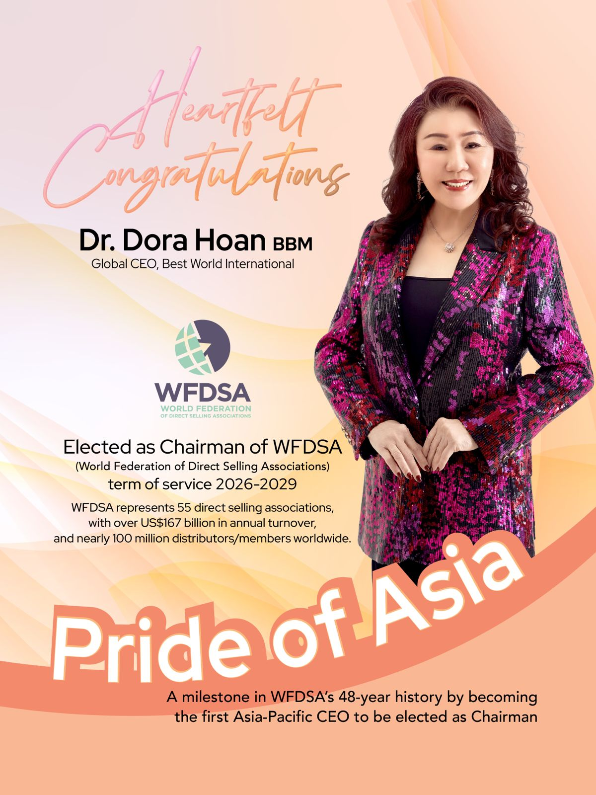
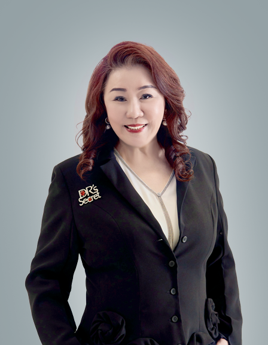
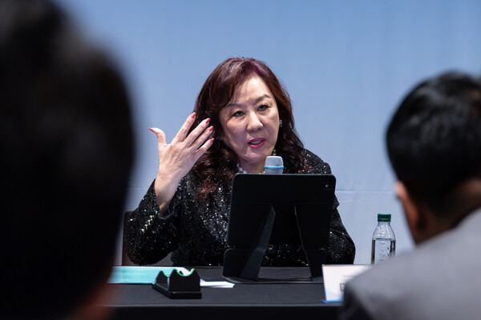
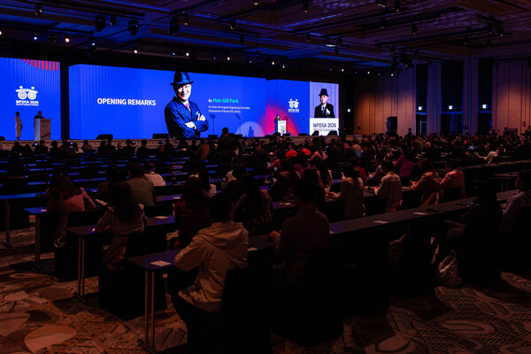
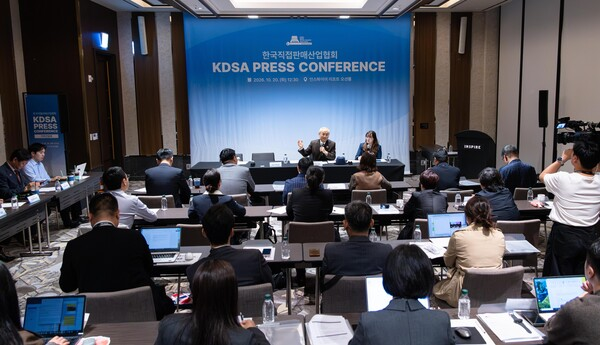
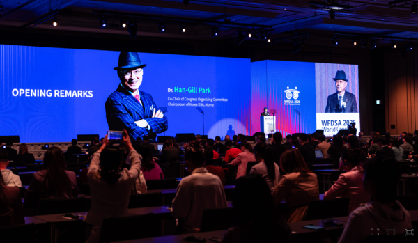
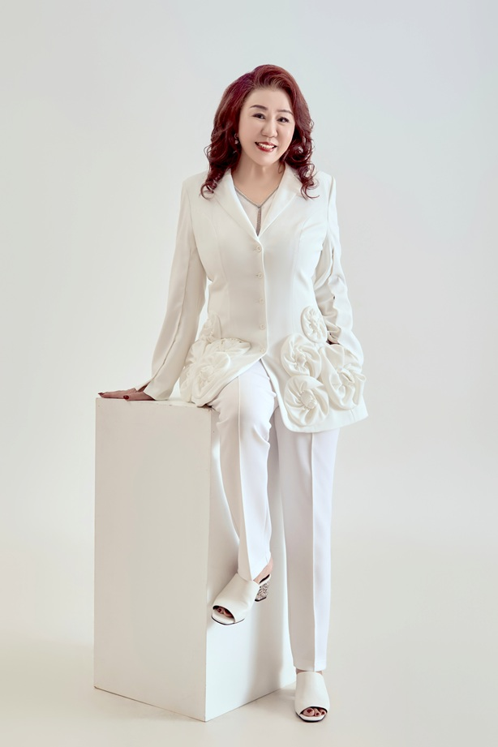
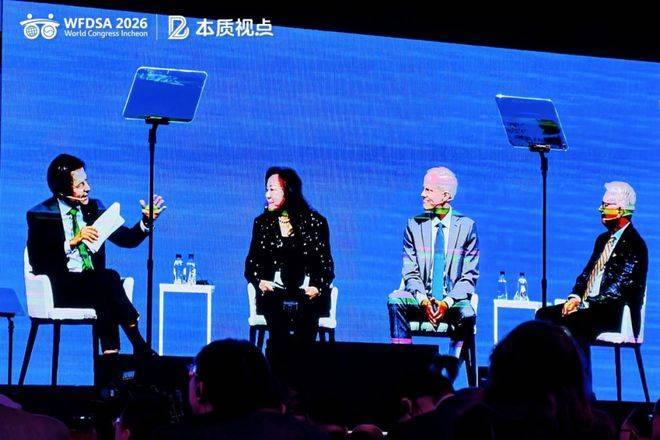
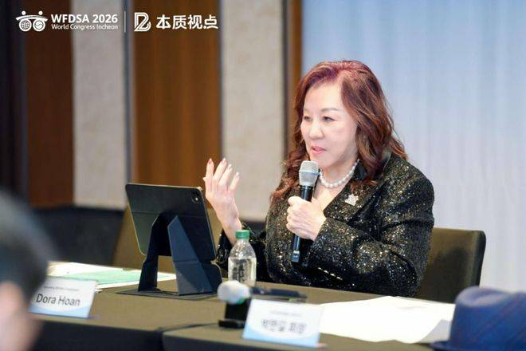

S01 · 官方公告 · 英文
Congratulatory to Dr Dora Hoan ↗
協會祝賀當選；確認48年歷史首位亞太區領袖。附圖列主席任期2026–2029。
完整收錄目前整理的35筆來源與線索、9張圖片，以及人物背景、歷史資料及分享文案，方便經銷商閱讀及取用。
范文瑂博士當選世界直銷聯盟主席，任期2026–2029。DSAS官方公告及海報確認，她是聯盟48年歷史中首位來自亞太區的領袖擔任此職。
第18屆世界大會於2026年10月19–21日在韓國仁川舉行。
閱讀官方公告 ↗共9張圖片，點擊即可查看原檔。

DSAS發布的祝賀海報，列明WFDSA主席任期為2026–2029。
原圖 · 來源頁
范文瑂博士的大會官方講者肖像；非就任現場照片。
原圖 · 來源頁
韓國報道刊載的范文瑂博士記者會照片；非交接儀式。
原圖 · 來源頁
第18屆WFDSA世界大會開幕現場，舞台畫面為Han-Gill Park。
原圖 · 來源頁
韓國直接販賣產業協會記者會全景；背景日期為2026年10月20日。
原圖 · 來源頁
第18屆WFDSA世界大會開幕環節；舞台顯示Han-Gill Park。
原圖 · 來源頁
MK News就任專訪所附范文瑂博士照片；具體拍攝場合未核實。
原圖 · 來源頁
CEO圓桌現場，范文瑂博士參與討論；不是就任交接儀式。
原圖 · 來源頁
范文瑂博士在媒體見面會發言；不是正式交接儀式。
原圖 · 來源頁按關鍵字、分類或語言瀏覽35筆來源。
協會祝賀當選；確認48年歷史首位亞太區領袖。附圖列主席任期2026–2029。
報道當選、亞太區里程碑，以及女性創業、創新和信任等方向。
報道任內方向：政府及監管溝通、商德與消費者保障、負責任AI應用、女性創業。
記者會報道提及Dora以WFDSA新主席身份出席，並談亞洲直銷發展。
轉載韓媒記者會報道，稱她本月就任，並提供新主席照片。
仁川第18屆大會議程：10月20日CEO Panel及Dora的AI時代直銷競爭優勢演講。
韓文議程及講者資料，可核對活動、講題與人名。
明確報道Dora在大會最後一天正式就任；配合文內21日，可將10月21日列為媒體報道的就任日期。
用戶提供的英文報道。
整理任命及產業發展議題，加入編輯分析。
摘要式整理當選及背景。
轉述The Business Times報道。
存檔有祝賀帖及履歷條列，提及2017–2026年三屆Secretary。
頁面仍列Roger Barnett為Chairman、Dora為Secretary。
公司官方人物簡介，列Dora為全球總裁及其企業與社會服務背景。
官方創辦人生平與歷程，適合延伸人物專題。
繁體中文創辦人介紹，可核對人物敘事及稱謂。
列Dora為新加坡直銷協會主席。
記錄Dora獲WFDSA傑出服務相關獎項，可補充長期服務歷程。
刊物第59頁記錄2011年獲委Association Services Committee主席。
第5頁有她以Secretary身份撰寫的周年寄語。
第6頁有Secretary寄語及肖像。
哥倫比亞協會帖文提及Dora的AI演講與國際交流，可補充跨語言傳播背景。
公司舊帖指向Dora的大會預告片。
記者會原稿，Dora談亞洲市場與國際交流；含新主席照片。
就任後五題專訪：ABC策略、行業信任、韓國市場、跨國交流，以及長期領導目標。
已保留連結；未取得正文、作者、日期或圖片。
中文現場報道，提及主席交接、CEO圓桌及范文瑂的記者會發言。
S28的轉載版本；補得CEO圓桌與范文瑂記者會照片。
聚焦10月20日媒體見面會與ABC工作方向，可補充中文編採線索。
以新主席及大會為切入點，解讀亞洲市場、AI與教育培訓。
整理大會產業數據，並提及女性參與及ABC方向。
記者會報道後段提及Dora以新主席身份出席，補充亞太區觀點。
大會開幕及CEO圓桌報道，列范文瑂為討論嘉賓。
搜尋索引中的首頁列出此標題；尚未取得文章正文及獨立文章網址。